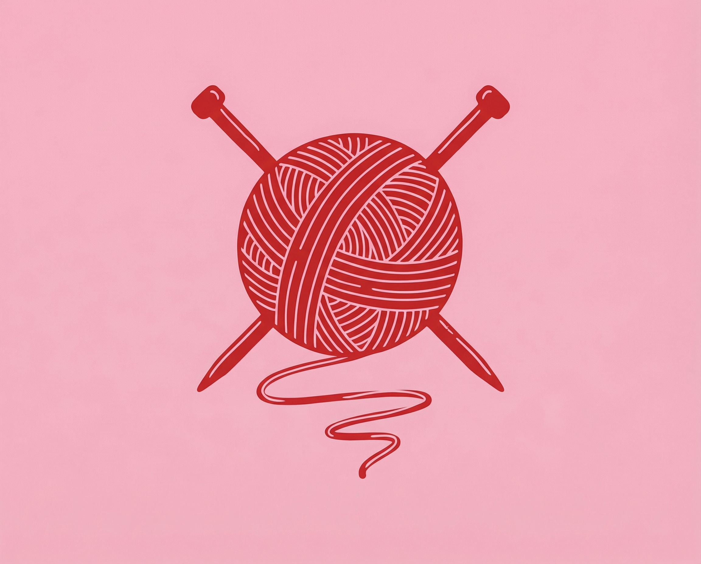

Embroidery
Florals, hoops & tiny details

The modern WI — minus the committee meetings.
It started with a simple idea: what if there was a place where women could bring their knitting, their crochet, their embroidery — and just sit together in a pub and craft?
No classes. No teachers. No membership. Just a table, some drinks, and the sound of needles clicking and yarn unwinding alongside good conversation.
We love the WI. We love craft groups. But sometimes you just want something more relaxed — more social, less structured. A night out that happens to involve yarn.
So we made one. Welcome to The Crafty Club Social.
Wine and wool. G&Ts and granny squares.
Florals, hoops & tiny details
Granny squares & cosy makes
Scarves, headbands & beyond
This is a night out, not a workshop. Come for the company as much as the crafting. The pub is the venue, the drinks are on you, and the vibe is warm.
Complete beginner? Seasoned pro? It doesn't matter. There's no judgement, no levels, and no one watching what you're making. Unless they want to copy it.
This is a space created for women, by women. A comfortable, welcoming evening where you can be yourself and craft in peace (with wine).
We're a Bath-based group. We meet at Bathampton Mill — a gorgeous pub right on the canal. If you're nearby, you're welcome.
Everything you might be wondering
Nope. Just show up. No tickets, no sign-up required.
That's totally fine. There'll be people at all levels. Someone will happily show you a stitch or two.
Just your craft project (and money for drinks). If you don't have a project yet, come anyway — you can always just hang out and watch.
Please do! The more the merrier. Friends, colleagues, your mum — everyone's welcome.
Yes. Completely free. We don't charge anything. You just buy your own drinks from the bar.
Sign up to hear about our next event. We promise not to spam you.